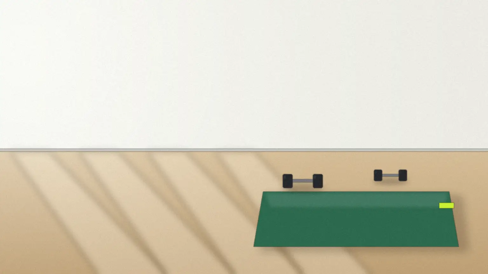
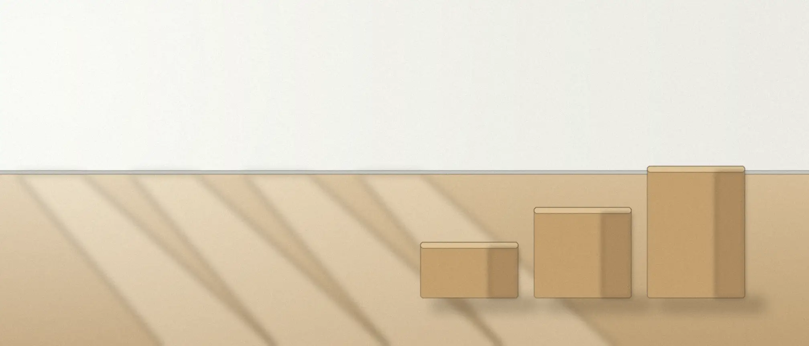
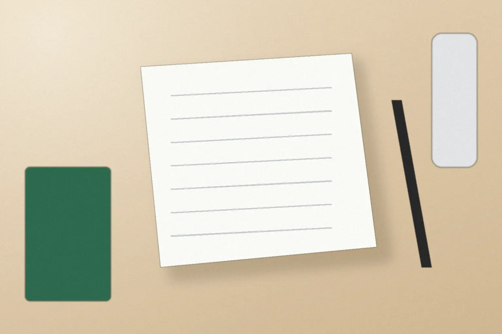

運動から長く離れていた40〜60代の、1対1のジム
週2回・1回50分。体力を、坂道のように
少しずつ。
体験は50分・3,300円（税込）。当日の入会は不要で、グループ・出張はしていません。

- 主なサービス
- 12週で24回筋力と、歩く力の練習
- 料金の目安
- 35,200円／月週2回（月8回）・税込
- 連絡方法
- フォーム・電話受付10〜20時・日曜休み

すること・しないこと
重すぎない道具で、
歩く力と筋力を。
このジムですること
- 脚・背中・腕の基本の筋力練習
- 階段や坂道を歩くための練習
- 毎回の記録の書き方と、読み方
しないこと
- 医療的なリハビリや治療
- 極端な食事制限・サプリメントの販売
- 体型の変化を約束すること
- 向かない方
- 治療やリハビリを目的とする方、食事制限で短い期間に体重を落としたい方。持病のある方は、主治医に運動してよいか確かめてからお越しください。
3か月の進め方
週2回なら、
12週で24回。

- 1回目体験と最初の面談
- 8回目見直し
- 16回目見直し
- 24回目続けるかを決める
- 1–2週目
最初の面談
生活の様子と、つらい動作を聞きます。今の体力を測って、記録の1ページ目に。
- 3–8週目
基礎の練習
脚・背中・腕の5種目を、正しい形で。重すぎない重さから始めます。
- 9–12週目
自分で続ける練習
毎回、その日の記録を自分で書きます。9週目からは、家や近所での練習も自分で続けます。
12週の1回目は、50分の体験から。
体験を申し込む記録と通いやすさ
毎回、3つだけ
ノートに書きます。
重さkg回数回歩いた時間分
記録ノートの1ページの欄です。数字は練習のたびに、あなたが書き込みます。


- 予約と振替
- Webで前日20時まで。電話でも受けます。
- 手ぶらで
- 更衣室・ロッカー・タオルあり。シャワーはありません。
- 駐輪場
- 自転車5台まで。駐車場はないため、近くの有料駐車場へ。
- 入口
- 道に面した1階です。入口の段差の有無は【要確認】です。
料金の目安
入会金はありません。
月謝か回数券を選べます。
すべて税込・1回50分・見本用の架空の価格です。
- 体験1回3,300円
- 月謝・週1回月4回19,800円／月
- 月謝・週2回月8回35,200円／月
週が読めない方には回数券もあります（4回 26,400円・有効2か月／8回 48,400円・有効3か月）。